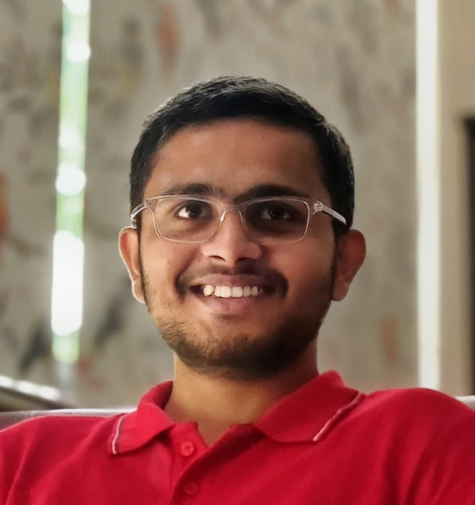

Uncovering SIMD Parallelism in CPU Packet Processing using the NIC as a Vector Co-Processor
K. Umaji, B. Shreyas, Y. Toshniwal, Y. Mehta, A. Sivaraman, S. Narayana

I am an M.S. (Research) student in Computer Science and Engineering at IIT Madras, advised by Prof. Srinivas NG.
My research focuses on high-performance packet processing. I am exploring how data-level parallelism can improve the performance of software network functions, and how compiler-assisted techniques can make these optimizations easier to apply with less architecture-specific programming. More broadly, I am interested in systems and compiler techniques for building efficient and portable packet-processing applications.
K. Umaji, B. Shreyas, Y. Toshniwal, Y. Mehta, A. Sivaraman, S. Narayana
Developed an L4S-aware scheduler on a BMv2 software switch, classifying traffic using ECN codepoints and approximating DualQ Coupled AQM with configurable queue-aware marking. Evaluated latency and fairness using controlled traffic experiments.
Implemented a descriptor-based MCAS primitive and used it to build an atomic snapshot object and lock-free linked lists. Tested correctness using linearizability and model-based testing.
Built a peer-to-peer messaging system with hierarchical certificate authorities, mutual X.509 authentication, and time-bound AES session keys.
I have served as a teaching assistant at IIT Madras for the following courses: